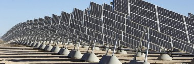
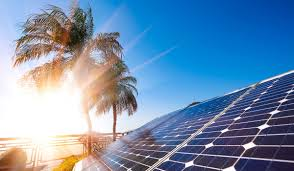

<!DOCTYPE html>
<html>

<head>
<title>Sistema Solar</title>
<meta charset = 'utf-8'>

</head>
<link rel= 'stylesheet' type='text/css' href='../css/estilos.css'>
</html>
<h1><body style = 'text-align:center;'><script>

/*
RAINBOW TEXT Script by Matt Hedgecoe (c) 2002
Featured on JavaScript Kit
For this script, visit http://www.javascriptkit.com
*/

// ********** cambia aquí

var text="Energía solar" // tu texto
var speed=80 // velocidad de movimiento 


if (document.all||document.getElementById){
document.write('<span id="highlight">' + text + '</span>')
var storetext=document.getElementById? document.getElementById("highlight") : document.all.highlight
}
else
document.write(text)
var hex=new Array("00","14","28","3C","50","64","78","8C","A0","B4","C8","DC","F0")
var r=1
var g=1
var b=1
var seq=1
function changetext(){
rainbow="#"+hex[r]+hex[g]+hex[b]
storetext.style.color=rainbow
}
function change(){
if (seq==6){
b--
if (b==0)
seq=1
}
if (seq==5){
r++
if (r==12)
seq=6
}
if (seq==4){
g--
if (g==0)
seq=5
}
if (seq==3){
b++
if (b==12)
seq=4
}
if (seq==2){
r--
if (r==0)
seq=3
}
if (seq==1){
g++
if (g==12)
seq=2
}
changetext()
}
function starteffect(){
if (document.all||document.getElementById)
flash=setInterval("change()",speed)
}
starteffect()
</script></body></h1>

<body>

<h3></h3>
<div align="center"></div>
<h5 align="left"> El Sol, fuente de vida y origen de las demás formas de energía que el ser humano ha utilizado desde los albores de la historia, puede satisfacer todas nuestras necesidades si aprendemos cómo aprovechar de forma racional la luz que continuamente derrama sobre el planeta. Ha brillado en el cielo desde hace unos cinco mil millones de años, y se calcula que todavía no ha llegado ni a la mitad de su existencia.</h5>
<h5 align="left">Durante el presente año, el Sol arrojará sobre la Tierra cuatro mil veces más energía que la que vamos a consumir.</h5>
<h5 align="left"> España, por su privilegiada situación y climatología, se ve particularmente favorecida respecto al resto de los países de Europa, ya que sobre cada metro cuadrado de su suelo inciden al año unos 1.500 kilovatios-hora de energía, cifra similar a la de muchas regiones de América Central y del Sur. Esta energía puede aprovecharse directamente, o bien ser convertida en otras formas útiles como, por ejemplo, en electricidad.</h5>
<h5 align="left">  España, líder mundial en energías renovables, es también el país con más experiencia en tecnología solar. Ha sido líder mundial en desarrollo e implantación de centrales fotovoltaicas (una compañía española construirá la mayor planta fotovoltaica del mundo), y ocupa también el primer puesto en sistemas solares de concentración, exportando su tecnología a muchos países. Por mencionar otro ejemplo, la capacidad total en captadores solares para calentamiento de agua operativos supera a la de los Estados Unidos de América.</h5>
<h5 align="left">Sería poco racional no intentar aprovechar, por todos los medios técnicamente posibles, esta fuente energética gratuita, limpia e inagotable, que puede liberarnos definitivamente de la dependencia del petróleo o de otras alternativas poco seguras, contaminantes o, simplemente, agotables.</h5>
<h5 align="left">Es preciso, no obstante, señalar que existen algunos problemas que debemos afrontar y superar. Aparte de las dificultades que una política energética solar avanzada conllevaría por sí misma, hay que tener en cuenta que esta energía está sometida a continuas fluctuaciones y a variaciones más o menos bruscas. Así, por ejemplo, la radiación solar es menor en invierno, precisamente cuando más la solemos necesitar.</h5>
<h5 align="left">  Es de vital importancia proseguir con el desarrollo y perfeccionamiento de la todavía incipiente tecnología de captación, acumulación y distribución de la energía solar, para conseguir las condiciones que la hagan definitivamente competitiva, a escala planetaria. </h5>
<div align="center"></div>

<li><a href='../index.html'>Inicio</a></li>
</ul>
<ul>
<li><a href='astrologia.html'>Astrología</a></li>
</ul>
<ul>
<li><a href='curiosidades.html'>Curiosidades</a></li>
</ul>
<ul>
<li><a href='unpocodehumor.html'>Un poco de Humor</a></li>
</ul>
<ul>
<li><a href='planetas.html'>Planetas</a></li>
</ul>
</body>
